1. Parse the demonstration
Demo-CaP takes in a demonstration and generates a JSON containing object locations, spatial relationships between objects, timed contact points and movement paths.
CoRL 2026 · Late-Breaking Submission
University of Washington, Seattle
Code-as-Policy (CaP) uses large language models to synthesize executable robot programs from language, but instructions often omit the geometric and procedural details needed for manipulation. We study whether one successful teleoperated demonstration can improve a language-only CaP agent without task-specific policy training. Our method, DemoCaP, identifies object interactions and extracts object-relative motion and spatial context from the demonstration, then uses it to improve code generation at test-time. We compare this method to CaP++, a language-only baseline we build based on CaP-X. Across the 12 conditions, DemoCaP achieves 57.8% mean success compared with 51.5% for CaP++. The gains persist under changes to object positions and task specifications, suggesting that a single demonstration can help close the specification gap while preserving the inspectability and editability of code-based policies.
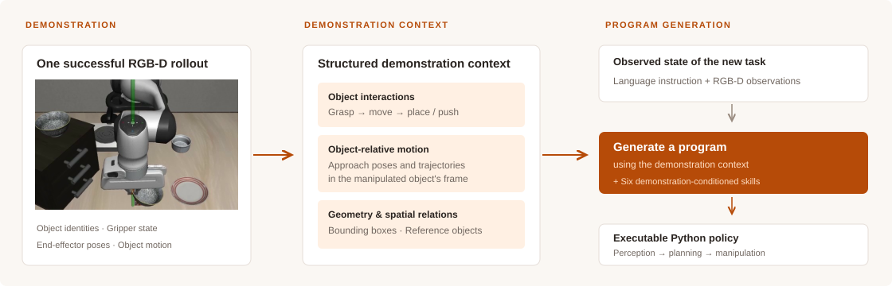
Demo-CaP takes in a demonstration and generates a JSON containing object locations, spatial relationships between objects, timed contact points and movement paths.
When a new configuration of the task is encountered, the system uses API calls to inspect the previous JSON, and create an adapted program for the new task.
The program is tested zero-shot on the environment. No task-specific policy training or trial-and-error is required. The code-as-policy contains what has been taken from the demonstration and what is adapted to the new task, explicitly.
DemoCaP mean across 12 method-comparison conditions
CaP++ mean across the same 12 conditions
Conditions where DemoCaP exceeds CaP++
We tested 7 methods across four LIBERO suites, evaluated on original scenes, position swaps, and task changes. All results use 50 trials per task, context is not preserved between trials, and one demonstration per task is used for DemoCaP.
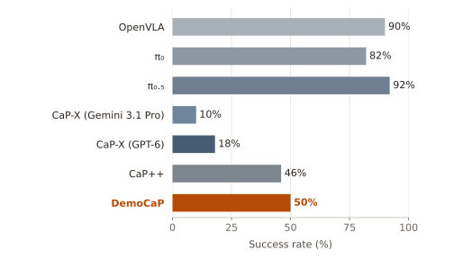
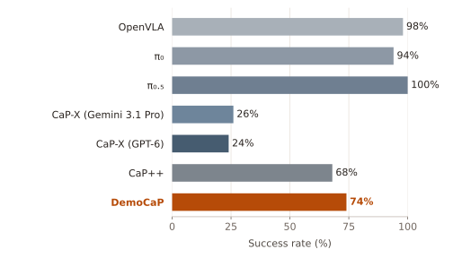
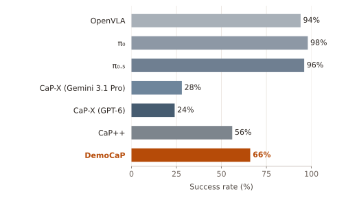
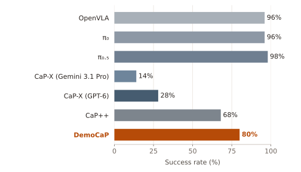
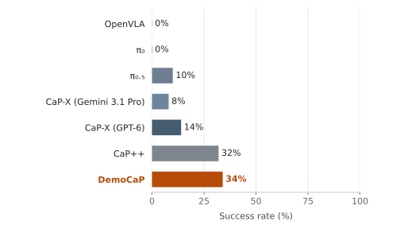
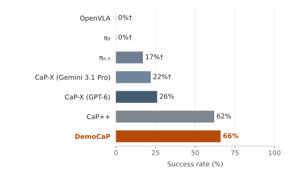
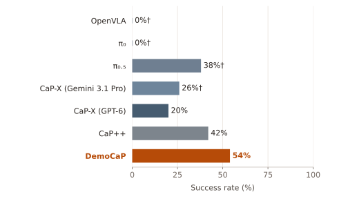
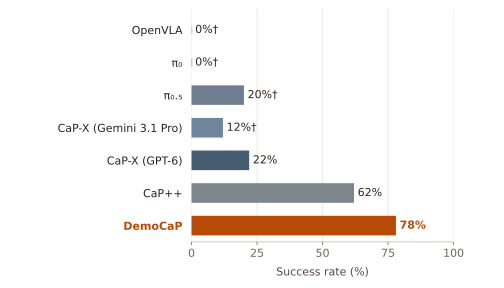
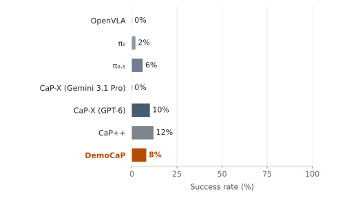
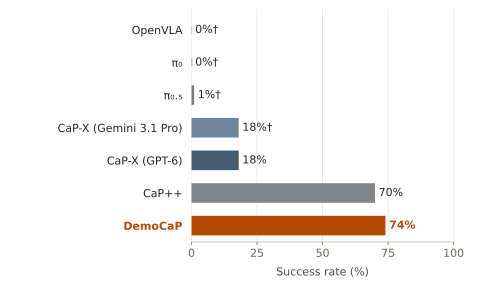
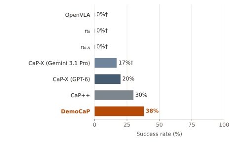
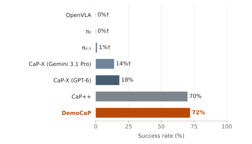
† Values reported by CaP-X; unmarked values were evaluated in this work. DemoCaP is highlighted in orange.
| Method | LIBERO-10 | LIBERO-Object | LIBERO-Goal | LIBERO-Spatial | ||||||||
|---|---|---|---|---|---|---|---|---|---|---|---|---|
| O | PS | TC | O | PS | TC | O | PS | TC | O | PS | TC | |
| OpenVLA | 90 | 0 | 0 | 98 | 0† | 0† | 94 | 0† | 0† | 96 | 0† | 0† |
| π₀ | 82 | 0 | 2 | 94 | 0† | 0† | 98 | 0† | 0† | 96 | 0† | 0† |
| π₀.₅ | 92 | 10 | 6 | 100 | 17† | 1† | 96 | 38† | 0† | 98 | 20† | 1† |
| CaP-X (Gemini 3.1 Pro) | 10 | 8 | 0 | 26 | 22† | 18† | 28 | 26† | 17† | 14 | 12† | 14† |
| CaP-X (GPT-6) | 18 | 14 | 10 | 24 | 26 | 18 | 24 | 20 | 20 | 28 | 22 | 18 |
| CaP++ | 46 | 32 | 12 | 68 | 62 | 70 | 56 | 42 | 30 | 68 | 62 | 70 |
| DemoCaP | 50 | 34 | 8 | 74 | 66 | 74 | 66 | 54 | 38 | 80 | 78 | 72 |
We compared CaP++ and DemoCaP under position, appearance, distractor, language, and environment changes from LIBERO-PRO. Position shift is provided for LIBERO-Object only. Sample counts (n) are shown for every condition.
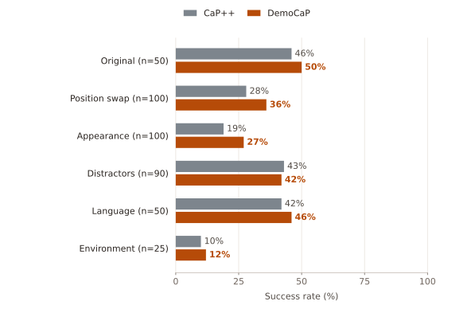
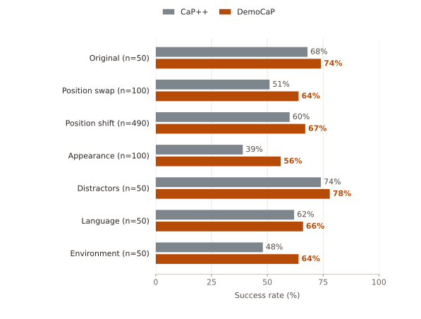
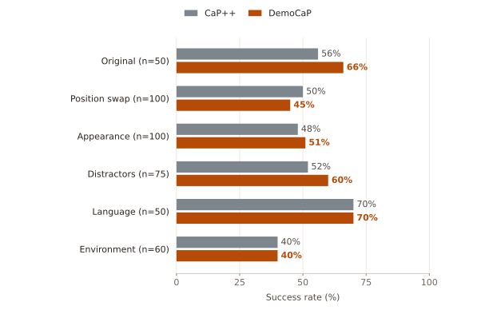
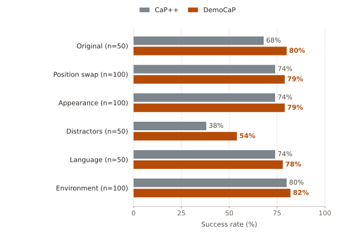
| Suite | Condition | n | CaP++ | DemoCaP |
|---|---|---|---|---|
| LIBERO-10 | Original | 50 | 46 | 50 |
| LIBERO-10 | Position swap | 100 | 28 | 36 |
| LIBERO-10 | Appearance | 100 | 19 | 27 |
| LIBERO-10 | Distractors | 90 | 43 | 42 |
| LIBERO-10 | Language | 50 | 42 | 46 |
| LIBERO-10 | Environment | 25 | 10 | 12 |
| LIBERO-Object | Original | 50 | 68 | 74 |
| LIBERO-Object | Position swap | 100 | 51 | 64 |
| LIBERO-Object | Position shift | 490 | 60 | 67 |
| LIBERO-Object | Appearance | 100 | 39 | 56 |
| LIBERO-Object | Distractors | 50 | 74 | 78 |
| LIBERO-Object | Language | 50 | 62 | 66 |
| LIBERO-Object | Environment | 50 | 48 | 64 |
| LIBERO-Goal | Original | 50 | 56 | 66 |
| LIBERO-Goal | Position swap | 100 | 50 | 45 |
| LIBERO-Goal | Appearance | 100 | 48 | 51 |
| LIBERO-Goal | Distractors | 75 | 52 | 60 |
| LIBERO-Goal | Language | 50 | 70 | 70 |
| LIBERO-Goal | Environment | 60 | 40 | 40 |
| LIBERO-Spatial | Original | 50 | 68 | 80 |
| LIBERO-Spatial | Position swap | 100 | 74 | 79 |
| LIBERO-Spatial | Appearance | 100 | 74 | 79 |
| LIBERO-Spatial | Distractors | 50 | 38 | 54 |
| LIBERO-Spatial | Language | 50 | 74 | 78 |
| LIBERO-Spatial | Environment | 100 | 80 | 82 |
DemoCaP’s structured demonstration conditioning compared with Direct-DemoCaP, which receives 16 sampled demonstration frames as context. Results are for original tasks in the four LIBERO suites.
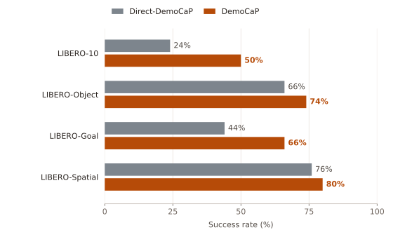
We show three paired examples in two panels to illustrate why a demonstration helps the coding agent understand the task better. Each pair uses the same task and seed, where CaP++ fails the task and DemoCaP succeeds.
LIBERO-Goal · Task 05 · Seed 06
Instruction Push the plate to the front of the stove
A naive coding agent tries to push the plate further out, and its large end-effector hits the cabinet nearby.
The coding agent reuses the strategy shown in the demonstration, and directly pushes the plate toward the burner, correctly displacing the cream cheese box in the process.
A teleoperated demonstration can provide planning constraints not thought of by the model initially. In this case, the large end-effector and the workspace of the robot makes going around the cream cheese impractical and unlikely to succeed. Hence, the direct strategy is provided, which increases the chances for success.
LIBERO-Object · Task 04 · Seed 01
Instruction Pick the ketchup and place it in the basket
A different bottle, that also looks like ketchup but isn't, is placed onto the basket.
The demonstrated object is matched to the ketchup bottle, which is placed in the basket.
LIBERO-Object · Task 02 · Seed 03
Instruction Pick the salad dressing and place it in the basket
A ketchup bottle that has a similar shape to the salad-dressing bottle is picked up.
The selection is corrected to the salad-dressing bottle before pickup.
The demonstration provides an object-identity cue. In this run, the ordinary library grasp is retained after the selection is corrected.
Videos retain their full duration and recorded playback rate. Outcomes use the simulator’s completed flag.